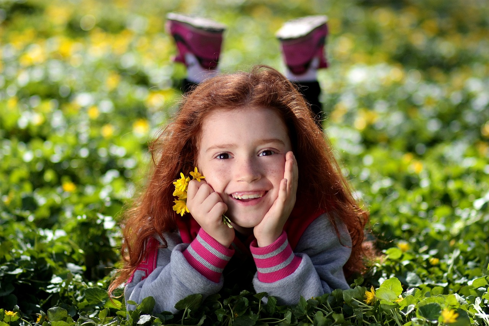
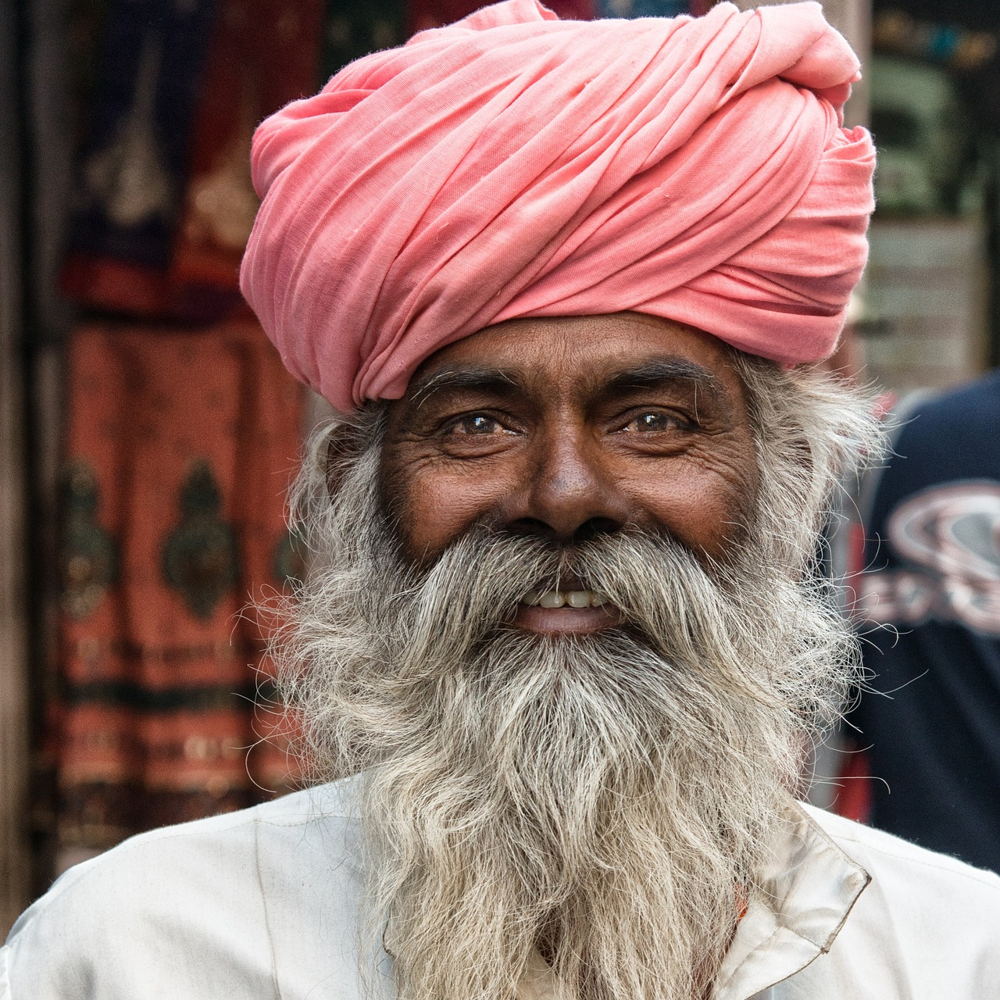
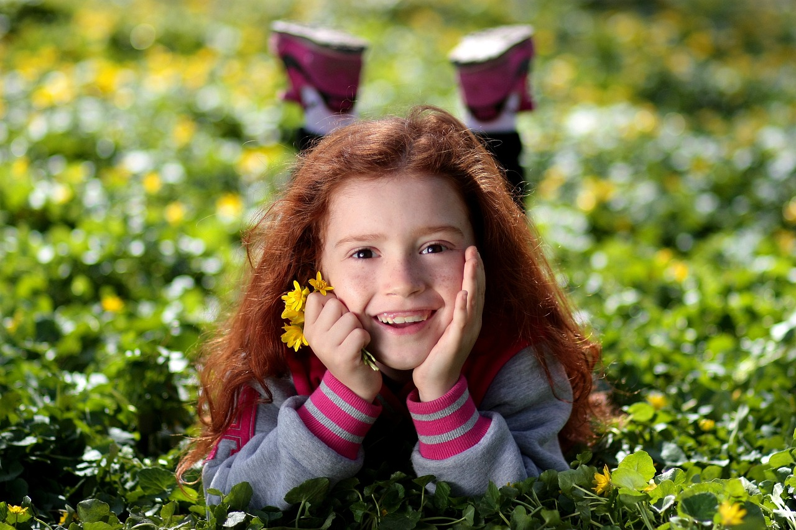
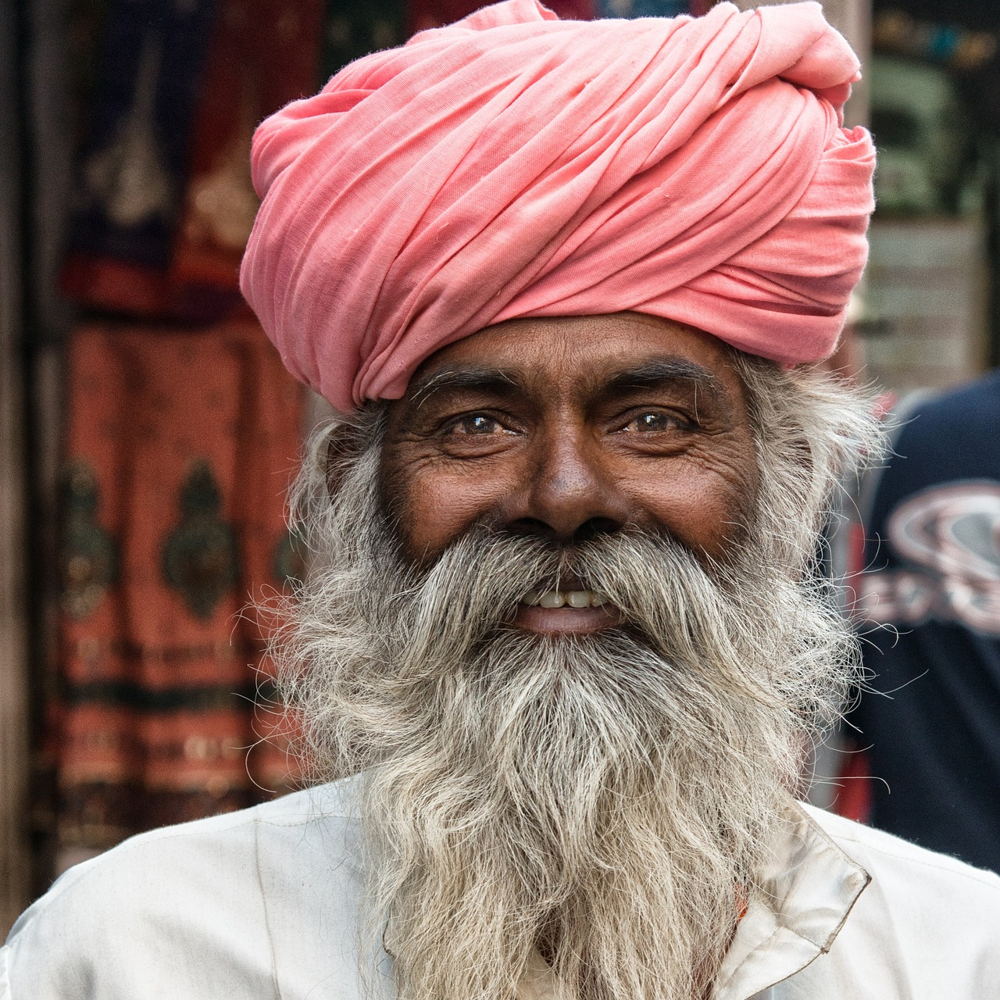
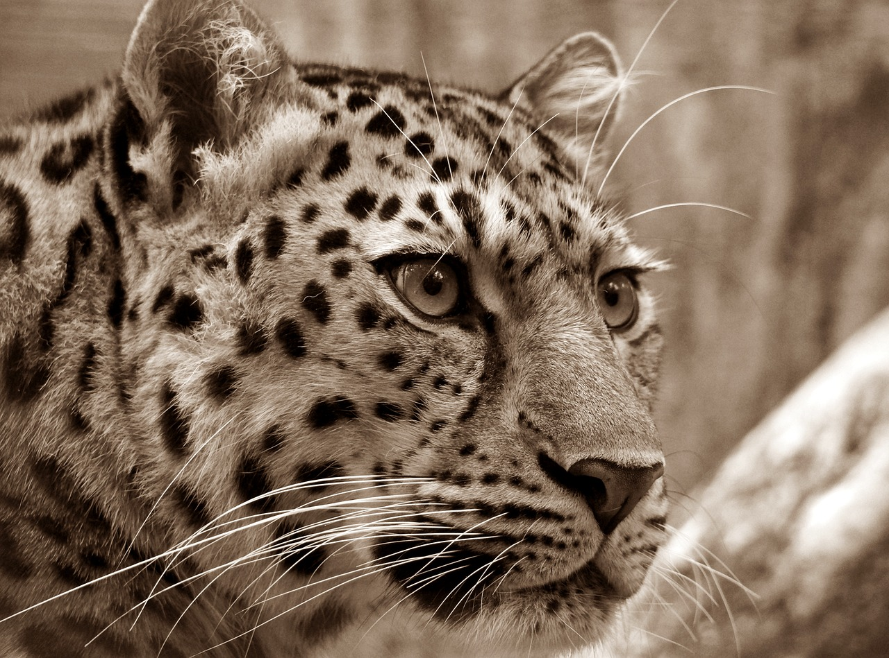
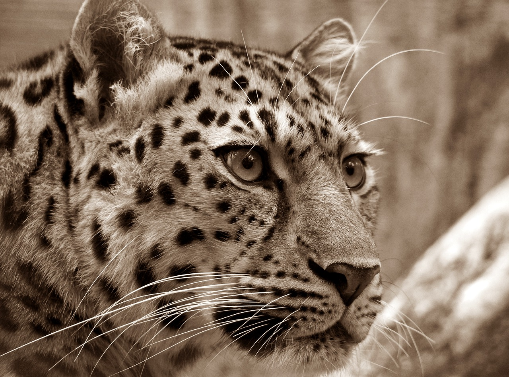

PORTRE
Belli bir kişinin yüz ve başının konu alındığı resimlerdir. Omuzlara hatta istenirse bele kadar resmedilebilir. Burada esas olan kişinin yüzündeki ifadesinin doğru aktarılabilmesidir. Karakterinin canlandırılması, gölge oyunlarının yapılması ve yüzünün anatomik yapısının incelenmesi ele alınan başlıca konular arasındadır. Modelin yüz yapısını incelemek ve resme yerleştirirken kaş, göz, burun yapısına dikkat etmek gerekmektedir. Portre resimlerinde küçük bir fırça vuruşu, birkaç çizgi veya leke, ifadeyi olduğu gibi değiştirebilir. En iyi portreler, başı biraz sağa veya sola döndürerek elde edilir. Ayrıca portre çizimi yapılırken modelin hareket etmemesi gerekir. İdeal poz, ışığın yandan gelmesi ve modelin karşıya doğru bakması ile elde edilir. Kullanılan malzemeye göre resim türleri ise;
- Sulu boya
- Yağlı boya
- Guaj
- Pastel
- Fresko (renkli duvar resimleri)
- Tempera (yumurta, bal kullanılan resimler) ve Natürmorttur.
 




 
